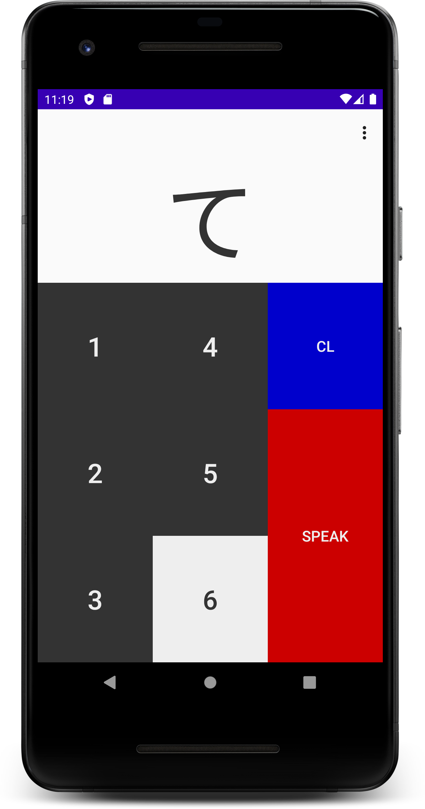
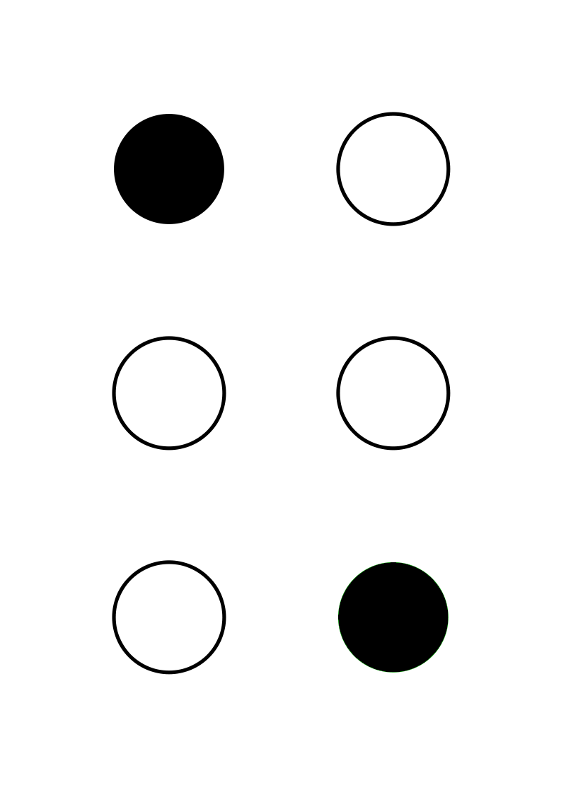
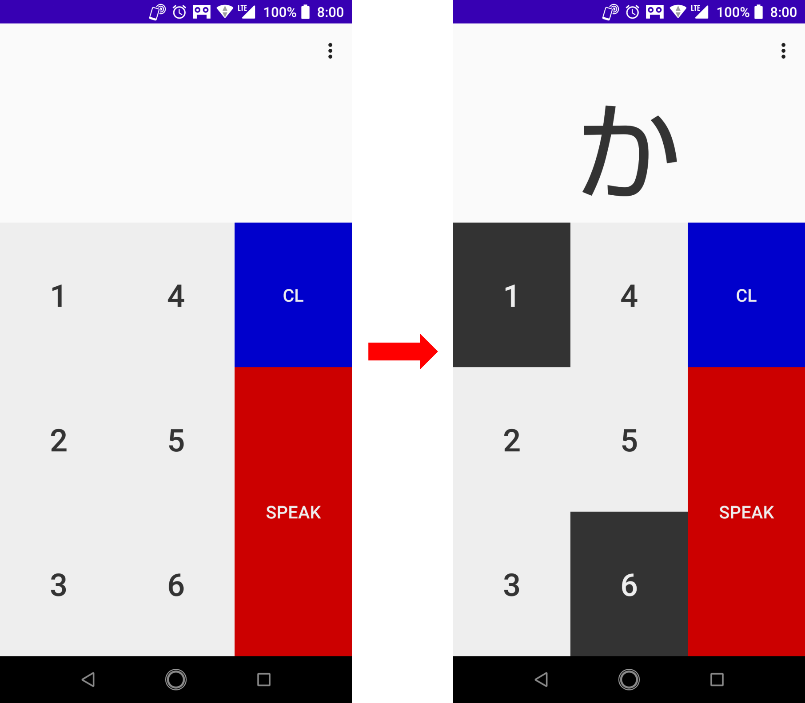

Bresso
シンプルなデザインの点字触読支援アプリ
使い方
- [1]から[6]までのキーをタップして、点字を入力します。
- 例えば、[1]キーと[6]キー（「か（）」に対応）をタップすると、画面の上部に「か」と表示されます。
- ひらがなが表示されているときに、[SPEAK]キーをタップすると、その文字を発音します。
- [CL]キーをタップすると、全ての点の選択が初期化されます。

謝辞
このアプリは、「あみたろの声素材工房」の声素材を使用しており、声素材の著作権は、あみたろ様に帰属します。